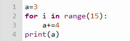

Les Boucles
| Boucles non bornées | Boucles bornées | ||
|---|---|---|---|
| Explication | Exemple | Explication | Exemple |
| Lorsqu'on ne sait pas à l'avance combien de fois on veut faire une opération, on utilise une boucle non bornée obtenue par la commande while . |
|
Lorsqu'on sait combien de fois on veut effectuer la même opération, on fait plutôt une boucle bornée avec for . |
 |
|

|
|
||